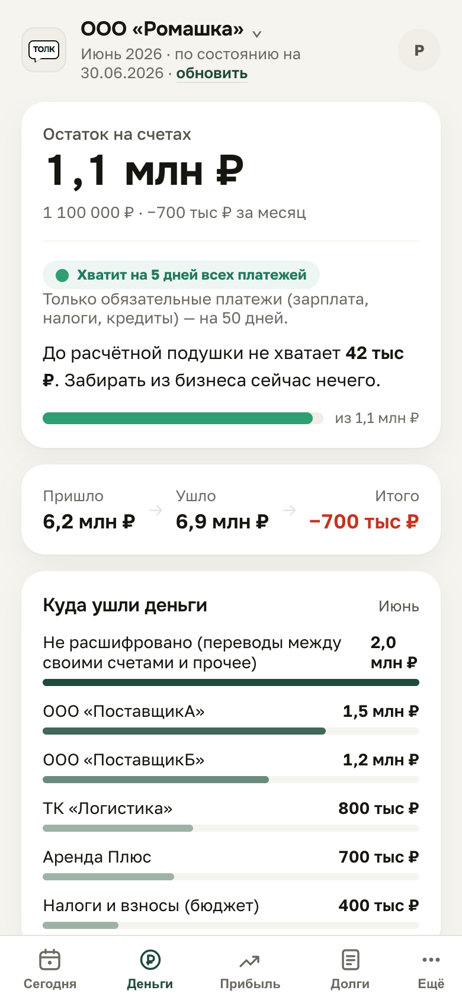
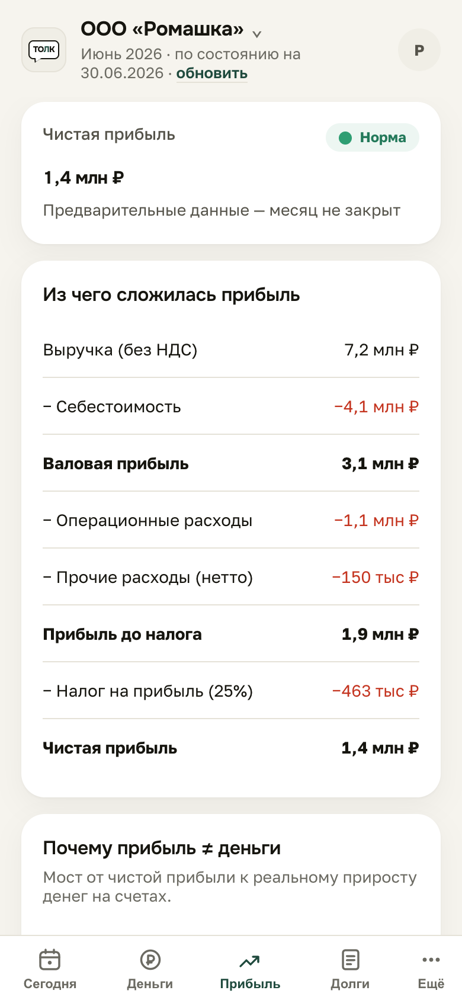
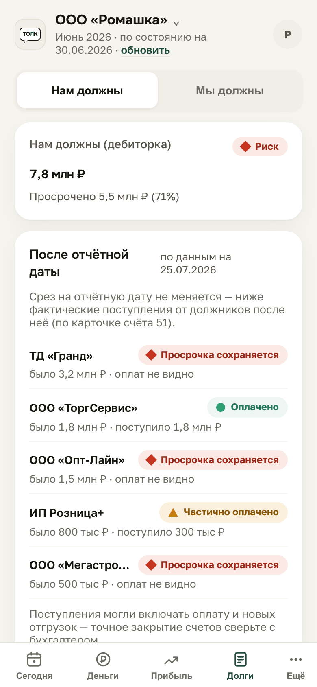
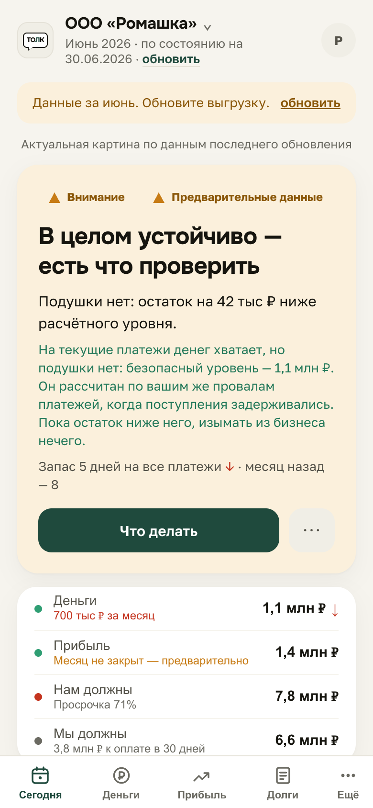

Толк предупреждает заранее. Берёт данные из вашей 1С:Бухгалтерии и отвечает на четыре вопроса собственника: хватит ли денег, сколько заработали, кто кому должен и всё ли в порядке. Не таблицы — а выводы.
Демо открывается за одно нажатие — без регистрации и без ваших цифр.
Сейчас идёт пилот: участие бесплатное.
Нет Telegram или не хотите его открывать? Откройте Толк прямо в браузере.
В чём разница
1С хранит учёт, и он ведётся правильно — только не для вас. Вот одна и та же дебиторская задолженность в отчёте и в Толке.
Нам должны — 7 800 000 ₽
И всё. Что с этой суммой не так и что делать — догадывайтесь сами или спрашивайте бухгалтера.
Цифры — с экрана «Долги». Данные демокомпании ООО «Ромашка».
Четыре экрана
Открываете приложение — и сразу видите ответы. Без терминов, без выгрузок на десять страниц, без звонка бухгалтеру.
Не просто остаток, а запас прочности: на сколько дней хватит при нынешнем темпе расходов и какой уровень безопасен именно для вашего цикла.

Чистая прибыль и вся цепочка: выручка → себестоимость → расходы → налог. Видно, на каком шаге теряете.

Кто должен вам и сколько уже просрочил, кому должны вы и когда подходит срок. И отдельно — что произошло после отчётной даты: кто из должников уже заплатил, а кто так и не платил.

Экран, с которого начинается утро: общий вывод словами, четыре показателя с цветными отметками и кнопка «Что делать». Толк не нагнетает и не приукрашивает — говорит как есть.

Настоящие экраны приложения. Данные — демокомпания ООО «Ромашка».
Куда делись деньги
Самый частый вопрос собственника. На экране «Прибыль» есть отдельный разбор «Почему прибыль ≠ деньги»: Толк проходит путь прибыли по шагам — и видно, на каком именно шаге деньги остановились.
Главный вопрос
Столько можно забрать дивидендами или направить в развитие, не подставив зарплаты, налоги и поставщиков. Толк пересчитывает эту сумму после каждой загрузки данных.
Пример — демокомпания «ИП Сидоров». А у ООО «Ромашка» с экранов выше эта сумма равна нулю, и Толк пишет об этом прямым текстом: «До расчётной подушки не хватает 42 тыс ₽. Забирать из бизнеса сейчас нечего». Пока месяц не закрыт, сумма помечена как предварительная. Черновик за окончательный результат Толк не выдаёт.
Кто это сделал
За правилами и порогами Толка стоит методика практикующего аудитора: 30 лет работы с финансами компаний. Приложение не просто выводит остаток — оно сравнивает его с безопасным уровнем, ловит просрочку, замечает падение прибыли и говорит об этом простыми словами.
Как начать
Посмотреть можно прямо сейчас и без своих цифр. А дальше — выбрать, как данным попадать в Толк.
Внутри приложения есть демо-компании. Ни регистрации, ни выгрузок, ни ваших данных — просто посмотреть, как это выглядит и о чём говорит.
Ваш 1С-специалист один раз ставит обработку и назначает расписание. Дальше цифры приезжают в Толк сами, каждый день. Бухгалтера каждый месяц дёргать не нужно.
Бухгалтер делает обычную выгрузку оборотно-сальдовой ведомости (Excel или CSV) — это минута работы. Вы загружаете файл в приложении, Толк разбирает его сам.
Без мелкого шрифта
Расчёты выполняются на вашем устройстве. Копия данных хранится на сервере Толка в России и доступна только вам. Третьим лицам данные не передаются.
Сейчас идёт пилот — участие бесплатное. Дальше сервис станет платным; о цене предупредим заранее, без сюрпризов в конце месяца.
Откройте Толк в Telegram. Внутри есть демо-компании — можно посмотреть прямо сейчас, ничего не загружая.
Открыть Толк в Telegram